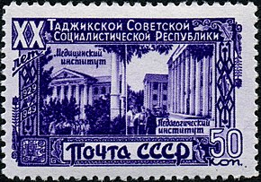

Худжанд является одним из древнейших городов Центральной Азии: по некоторым источникам, основание города приходится на VII—VI века до н. э. Весьма вероятно, Худжанд это Кирополис— город, основанный Киром Великим на северо-западных рубежах его огромной Ахеменидской империи. Был завоёван Александром Македонским, который перестроил и укрепил его, назвав Александрия Эсхата (то есть «Александрия Крайняя»).
Находясь на Великом шёлковом пути и соединяя Самарканд с Ферганской долиной, Худжанд имел выгодное геополитическое расположение и первостепенное транспортное значение. Впоследствии был завоёван арабами (VIII век), а в 1219—1220 годах оказывал ожесточённое сопротивление войскам Чингисхана,но был разрушен. Однако вскоре город возродился и стал одним из крупнейших торговых, культурных и научных центров центрально-азиатского региона. И даже сегодня Худжанд — важный промышленный, научный и культурный центр северного Таджикистана.
С древнейших времен Худжанд, находясь на перекрестке торговых путей Востока, на Великом шёлковом пути, был одним из важнейших экономических, военно-стратегических и культурных центров Фараруда. Худжанд был родиной известных астрономов, математиков, врачей, историков, поэтов, музыкантов. Один из них — основатель местной астрономической школы Абу Махмуда аль-Худжанди. «Соловьём Худжанда» называли в XIV веке Камаля Худжанди — автора знаменитых газелей. По преданию, именно в Худжанде стоял дом Ходжи Насреддина.
 В 1826 году нынешняя столица Таджикистана называлась Душанбе-Курган. Первая карта с указанием города Душанбе была составлена в 1875 году. Тогда город представлял собой крепость на обрывистом берегу, с 10 000 жителей. Кварталы города делились как по профессиональной принадлежности мастеров, так и по национальным общинам. Центрами общественной жизни были караван-сараи. В 14 квартальных мечетях находились мактабы, в городе было 2 медресе.
Душанбе находился в составе Бухарского Эмирата. В 1920 году последний бухарский эмир Сейид Алим-хан бежал в этот город, но в феврале следующего года бежал и отсюда в связи с наступлением Красной армии. В начале 1922 года город был взят войсками басмачей под предводительством Энвара-паши, но 14 июля 1922 года снова перешёл под власть большевиков и был провозглашён столицей Таджикской Автономной Советской Социалистической Республики в составе УзССР, которая в 1929 году была выделена в Таджикскую Советскую Социалистическую Республику.
В 1924—1929 годах город официально назывался Дюшамбе. 16 октября 1929 года переименован в Сталинабад в честь руководителя СССР И. В. Сталина. 10 ноября 1961 года городу возвращено первоначальное название — Душанбе. Первым председателем Душанбинского городского совета был Абдукарим Розыков. Он энергично занялся превращением столицы из кишлака в «образцовый коммунистический город», лично советуясь и постоянно общаясь с архитекторами, инженерами, учёными. По его просьбе и инициативе из Ленинграда в Душанбе в 1926 году была направлена группа архитекторов и инженеров-строителей для оказания помощи молодой столице в проектировании и строительстве общественных зданий и сооружений.